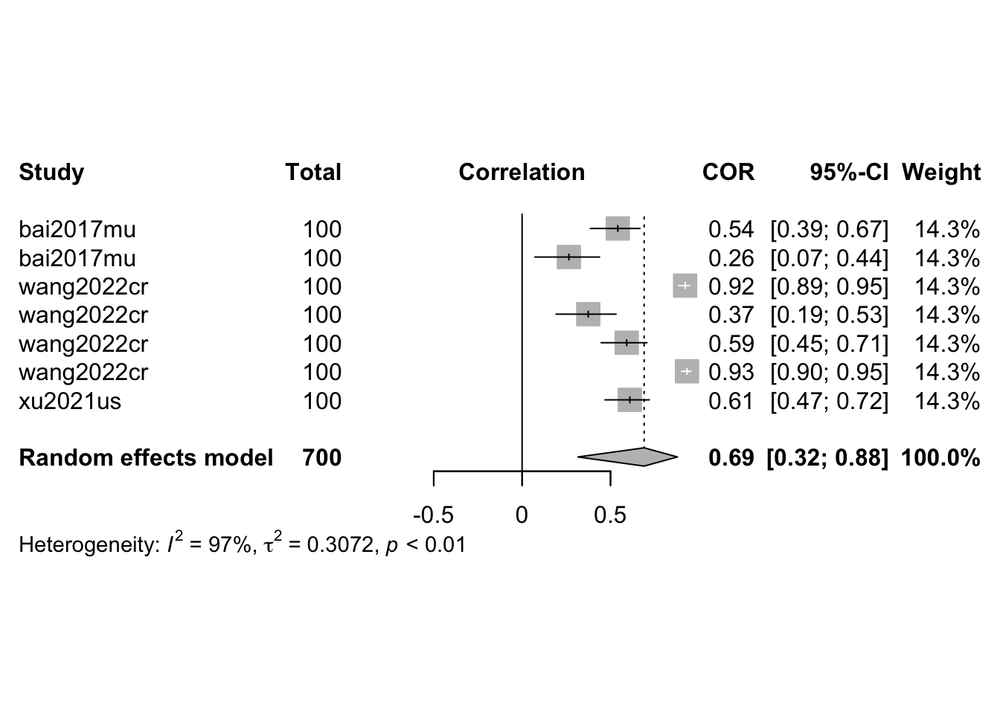

# get metaMER df:meta_df <-get_metaMER_df(path_2_studies = here::here('studies'))
Warning in scan(file = file, what = what, sep = sep, quote = quote, dec = dec,
: EOF within quoted string
# get included studiesincluded_studies <- meta_df[which(!stringr::str_detect(meta_df$final_notes, '!EXCL!')),] |> dplyr::tibble()
Recoded
# get studies re-coded (currently identifiable by presence of bind_field.)recoded_studies <- included_studies[which(stringr::str_detect( included_studies$model_rate_emotion_values,'bind_field')),]
Maybe limit the verbosity of get_study_results below
library(dmetar)library(tidyverse)library(meta)# select regression studies with r2tmp <- dplyr::filter(metaMER_results,dimension=="valence"& measure=="r2")#sqrt(tmp$values) # convert from R^2 to rtmp$stimulus_n <-100# ad-hoc for nowm.cor <-metacor(cor =sqrt(values), n = stimulus_n,studlab = citekey,data = tmp,fixed =FALSE,random =TRUE,sm ="ZCOR",method.tau ="REML",# could be PM (Paule-Mandel) as wellmethod.random.ci ="HK", title ="MER: Regression: Valence: All")print(m.cor)
Review: MER: Regression: Valence: All
Number of studies: k = 7
Number of observations: o = 700
COR 95%-CI t p-value
Random effects model 0.6902 [0.3161; 0.8786] 3.98 0.0073
Quantifying heterogeneity:
tau^2 = 0.3072 [0.1215; 1.5294]; tau = 0.5543 [0.3486; 1.2367]
I^2 = 96.8% [95.0%; 97.9%]; H = 5.55 [4.49; 6.85]
Test of heterogeneity:
Q d.f. p-value
184.80 6 < 0.0001
Details on meta-analytical method:
- Inverse variance method
- Restricted maximum-likelihood estimator for tau^2
- Q-Profile method for confidence interval of tau^2 and tau
- Hartung-Knapp adjustment for random effects model (df = 6)
- Fisher's z transformation of correlations
Explore qualities
meta <-metagen(values, sqrt(values), data = tmp, studlab = tmp$citekey, comb.fixed =FALSE, method.tau ="PM")find.outliers(meta)
Warning in eggers.test(meta): Your meta-analysis contains k = 7 studies.
Egger's test may lack the statistical power to detect bias when the number of
studies is small (i.e., k<10).
Eggers' test of the intercept
=============================
intercept 95% CI t p
1.081 0.89 - 1.27 11.048 0.000105785
Eggers' test indicates the presence of funnel plot asymmetry.
Sub-group analysis (based on model type)
meta <-metagen(values, sqrt(values), # Fix the TE.se data = tmp, studlab = tmp$citekey, comb.fixed =FALSE, method.tau ="PM")subgroup.analysis.mixed.effects(x = meta, subgroups = tmp$model_id)
Subgroup Results:
--------------
k TE seTE LLCI ULCI p Q
pls 4 0.3245200 0.2848333 -0.234 0.883 0.2545642 0.9119199
random forest regression 3 0.1471014 0.2214357 -0.287 0.581 0.5064937 0.2926959
I2 I2.lower I2.upper
pls 0 0 0.85
random forest regression 0 0 0.90
Test for subgroup differences (mixed/fixed-effects (plural) model):
--------------
Q df p
Between groups 0.241829 1 0.6228882
- Total number of studies included in subgroup analysis: 7
- Tau estimator used for within-group pooling: PM
Visualise
plot(m.cor)

plot(eggers.test(meta))
Warning in eggers.test(meta): Your meta-analysis contains k = 7 studies.
Egger's test may lack the statistical power to detect bias when the number of
studies is small (i.e., k<10).